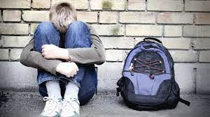
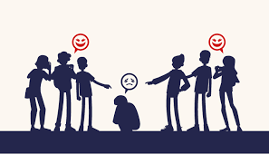

M.G., desde los 6 años hasta los 16 actualmente 57 años (Zamora) Me llamaban gorda en el colegio tanto niñas compañeras de clase como algunas profesoras. También en la calle. Recuerdo un día, con seis o siete años, que la profesora me mandó leer un fragmento del libro diciéndome “¡venga, tú, gorda, lee!”, Así día tras día. Crecí sabiendo que era gorda y pensaba que no valía lo mismo que otras niñas porque no querían jugar conmigo. Había chicas de mi colegio, también vecinas del barrio, que me insultaban cuando pasaba por su lado y no me dejaban entrar en ciertas calles de la zona porque era donde ellas jugaban. Una vez, quise subirme a los columpios de metal del patio vecinal, pero el portero salió rápidamente y me dijo que estaba demasiado gorda para montarme y que los iba a romper. Nunca me dejó subirme. En aquella época todo esto lo llamaban “cosas de críos”. Si tienes un hijo al que insultan o pegan ayúdale y apóyale. Si quien lee esto está pasando por una situación de acoso escolar, del tipo que sea, habla y cuenta lo que te ocurre porque hoy sí hay medios para que te ayuden y los padres sí hacen caso.
P.C.Desde los 4 años hasta los 16 años. Actualmente 44 años (Valladolid) Desde muy pequeña sentí que no encajaba en ninguna parte. No hacía amigos con facilidad. Mi experiencia en el colegio no fue mala en general, pero algunos episodios me marcaron y me hicieron sufrir. Un día cuando tenía unos cuatro años, lo que antes era 2º de párvulos, tuve que salir a cantar en clase. La profesora tuvo que salir un momento, justo cuando yo iba a empezar. A las dos frases dos niños de la primera fila me llamaron gorda, se rieron y con ellos el resto de la clase… Este hecho cambió mi forma de verme. Cada vez que alguien ha criticado mi peso, ha hablado de lo que como o lo que dejo de comer… me ha venido a la mente este recuerdo y me ha hecho sentir pequeña, que valía menos por pesar unos kilos de más y mi autoestima se ha resentido. En primero de EGB, además de “gorda”, ya tenía gafas y unos zapatos ortopédicos para corregir mi pisada. Lo siguiente fueron las risas por las escaleras de niñas incluso de otros cursos, y frases como “esos zapatos son de subnormal” y “vaya gafotas”.
S.S., desde los 5 años hasta los 10, edad actual 33 años (Valladolid) Todo empezó en el colegio con 5 años. Lo primero que recuerdo es que la mayor parte de la clase se reía de mí por ser la más bajita y empecé a acomplejarme. No tenía amigos y nunca hacía actividades ni iba a campamentos. La única relación que tenía en el colegio era con una niña dominante y mandona que “quería ser amiga mía” a cambio de hacer ciertas pruebas. Como por ejemplo, sostenerme colgada por los brazos de unas barras de metal que había en un tejadillo en el patio del colegio y aguantar como podía colgada dos minutos. En otras ocasiones me pedía lápices, pinturas nuevas o cosas mías que a ella le gustaba y se las quedaba. Y si me chivaba me ridiculizaba delante de todo el mundo. Se lo dije a mi madre al cabo de unos años y ella habló con la madre de esta niña pero sus padres defendían incondicionalmente a su hija y me culpaban a mí de todo. Cuando llegaban alumnos nuevos al colegio yo descargaba un enfado inconsciente que tenía con ellos. Supongo que copié patrones de conducta que había tenido esta niña conmigo. Cuando hablé con mi madre me di cuenta de lo que estaba haciendo y dejé de hacerlo. A partir de los 10 años, gracias a ir a actividades extraescolares, empecé a conocer más niños y a llevarme bien con algunos. Allí se dejaban las cosas, interactuaban sin burlas y me di cuenta de que lo que había vivido no era lo normal. Dejé de hacer caso a lo que aquella niña que me obligaba a hacer y se enfadó muchísimo. Con el tiempo me dejó en paz. Si estás siendo víctima de bullying no te lo calles: díselo a tus padres, a profesores. Es importante sacarlo a la luz cuanto antes, por ti y por esa persona que debe modificar su actitud cuanto antes.
 